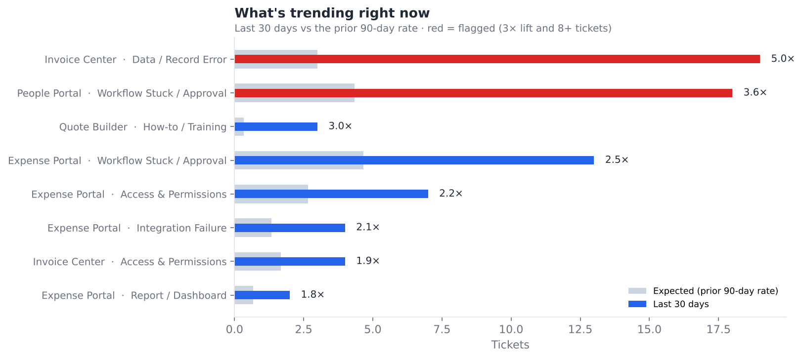
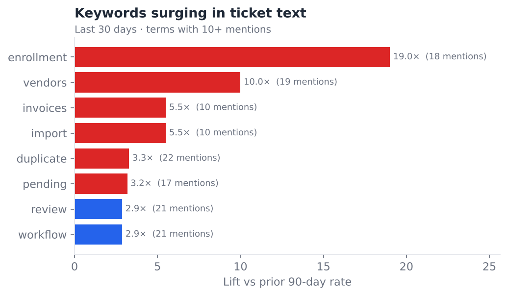
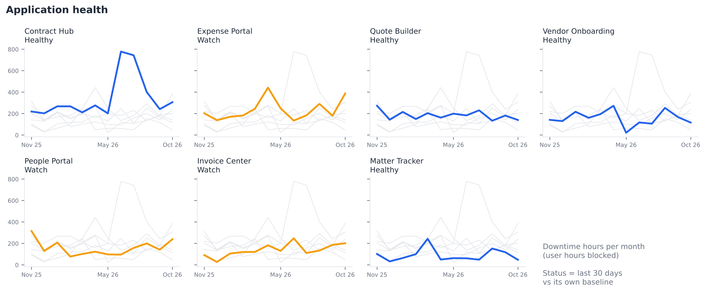
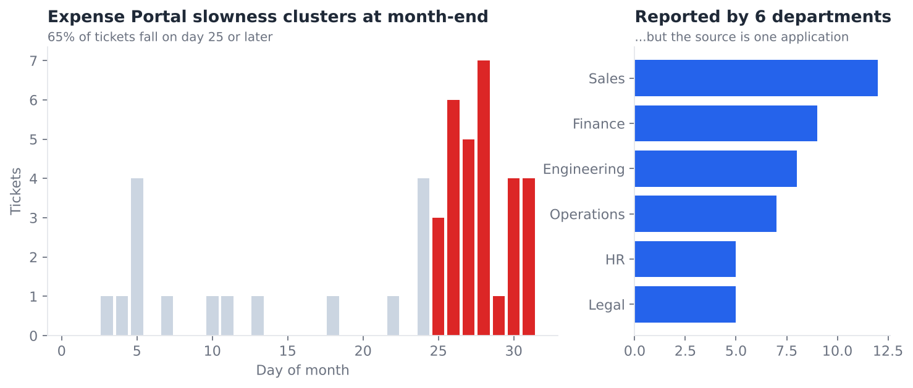
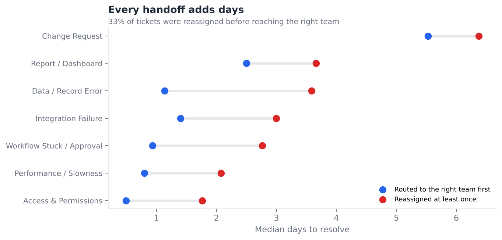
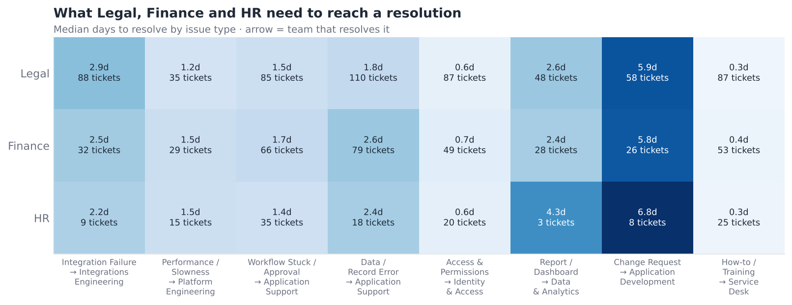

Support Operations Trends
1,886 support tickets from six business units, read together instead of one at a time. The analysis finds what is trending, traces it to its source and routes it to the team that can fix it.
Two issues are trending right now
| Issue | Signal | Impact | Route to |
|---|---|---|---|
| Invoice Center: duplicate invoice records | 5.0× expected in the last 30 days, still climbing | 285 vendor records, double-payment risk | Finance + Application Support |
| People Portal: enrollment approvals stuck | 3.6× expected, reported by all 6 departments | Employees blocked before the enrollment deadline | HR + Application Support |

The keyword view catches the same signals straight from ticket text, before anyone categorizes anything: enrollment ran at 19× its usual rate.

One release caused most of the year's record damage
A June release broke Contract Hub's e-signature connector. Over eight weeks it generated 49 tickets, left 1,528 contract records unsent and cost about 1,260 hours of downtime. 82% of those tickets bounced between teams before reaching Integrations Engineering.

Six departments, one source
Expense Portal slowness is reported by every department, so it looks company-wide. But 65% of those tickets land on day 25 or later: it is one application buckling under month-end load.

Handoffs are the hidden downtime cost
33% of tickets went to the wrong team first. Each reassignment adds about 1 to 2.5 days to resolution, and about 5,200 hours of downtime trace back to misrouting. Integration failures are the worst case: 73% of Legal's were reassigned.

What Legal, Finance and HR each need
Legal carries the heaviest load (598 tickets), led by data errors and Contract Hub integration failures. Finance data errors take a median 2.6 days, and 46% are reassigned first. HR is dominated by stuck approvals in People Portal.

How it works
Keyword rules tag 89% of tickets at 94.5% accuracy. Only vague tickets go to Gemini, which must choose from a fixed tag list. Each application and tag pair is compared with its own baseline, and flagged at 3× expected volume with at least 8 tickets.